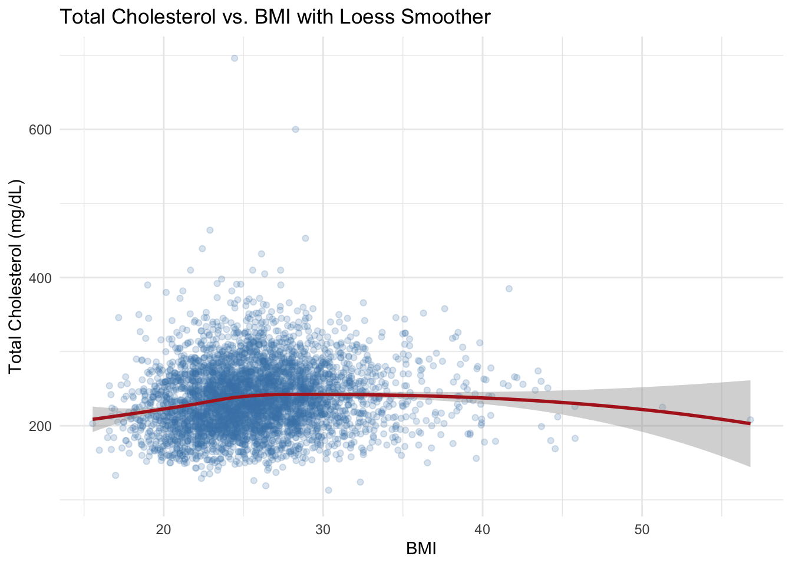
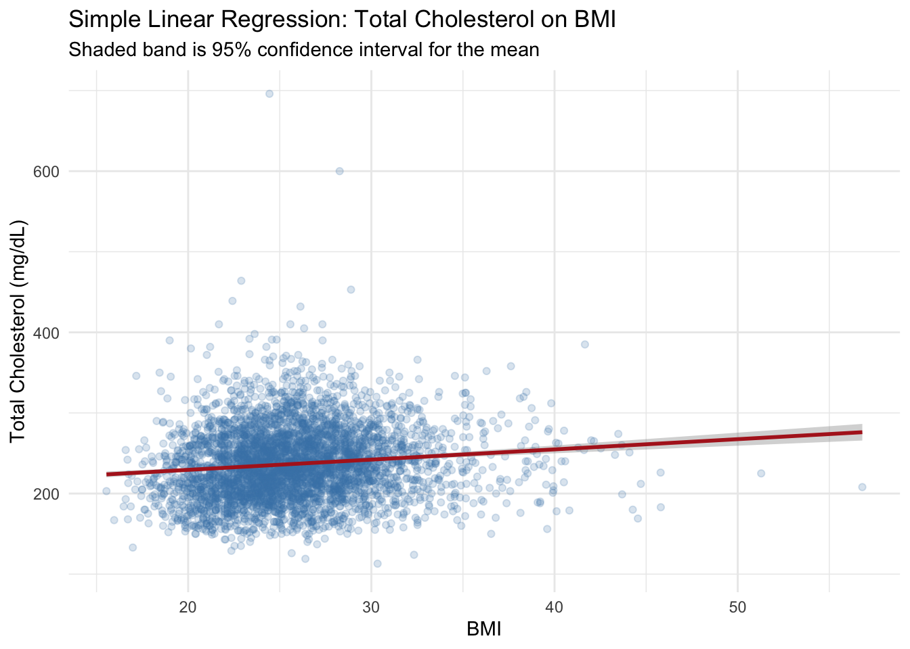
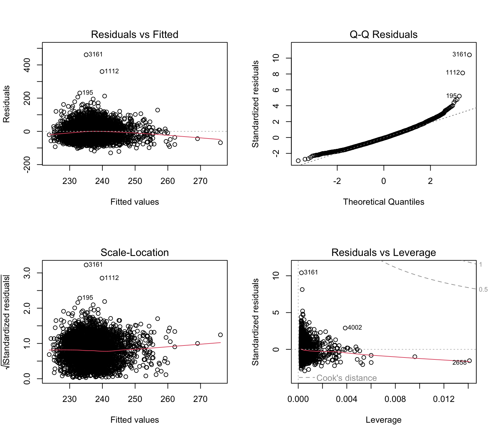
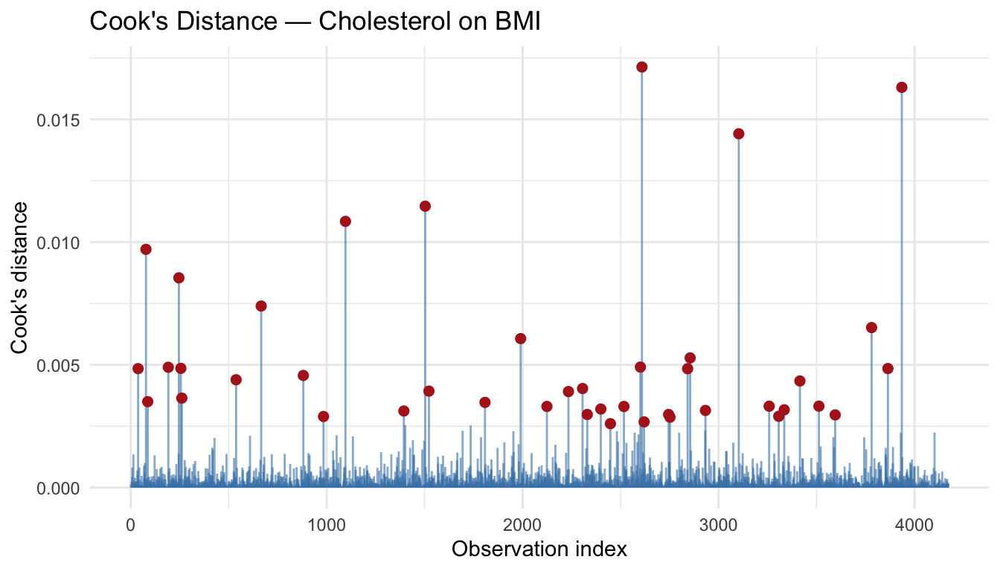

library(tidyverse)
library(this.path)
setwd(this.dir())
framingham <- read_csv("../../data/framingham.csv") |>
mutate(
male = factor(male, levels = c(0,1), labels = c("Female","Male")),
currentSmoker = factor(currentSmoker, levels = c(0,1), labels = c("Non-smoker","Smoker")),
prevalentHyp = factor(prevalentHyp, levels = c(0,1), labels = c("No","Yes")),
diabetes = factor(diabetes, levels = c(0,1), labels = c("No","Yes")),
TenYearCHD = factor(TenYearCHD, levels = c(0,1), labels = c("No","Yes")),
education = factor(education, levels = 1:4,
labels = c("Some HS","HS Diploma","Some College","College Degree"))
)Day 6 (PM) Lab: Linear Regression
SC INBRE Biostatistics Summer Intensive 2026
1 Overview
This lab puts the Day 6 morning material into practice. You will work through the full linear regression workflow — from checking variable form to fitting, interpreting, and diagnosing models — using the Framingham Heart Study dataset you already know.
How this lab works:
- Part 1 (instructor demo, ~20 min): Follow along as the instructor works through a complete simple regression example using a new outcome variable.
- Part 2 (on your own, ~90 min): Six exercises of increasing difficulty. Create a new
.qmdfile, work through each exercise, render when done.
The Quick Reference Card in Section 3 has the key functions.
2 Part 1: Instructor Demo
2.1 Setup
2.2 Step 1: Check Variable Form
We want to predict total cholesterol (totChol) from BMI. First, inspect the relationship visually with a loess smoother.
ggplot(framingham, aes(x = BMI, y = totChol)) +
geom_point(alpha = 0.2, color = "steelblue") +
geom_smooth(method = "loess", color = "firebrick", se = TRUE, linewidth = 1) +
labs(x = "BMI", y = "Total Cholesterol (mg/dL)",
title = "Total Cholesterol vs. BMI with Loess Smoother") +
theme_minimal()
The loess curve is approximately linear — a linear model is reasonable here.
2.3 Step 2: Fit the Model and Interpret
chol_model <- lm(totChol ~ BMI, data = framingham)
summary(chol_model)
Call:
lm(formula = totChol ~ BMI, data = framingham)
Residuals:
Min 1Q Median 3Q Max
-129.52 -30.38 -3.43 26.65 460.97
Coefficients:
Estimate Std. Error t value Pr(>|t|)
(Intercept) 204.0295 4.3932 46.442 < 2e-16 ***
BMI 1.2686 0.1682 7.541 5.68e-14 ***
---
Signif. codes: 0 '***' 0.001 '**' 0.01 '*' 0.05 '.' 0.1 ' ' 1
Residual standard error: 44.3 on 4170 degrees of freedom
(68 observations deleted due to missingness)
Multiple R-squared: 0.01345, Adjusted R-squared: 0.01322
F-statistic: 56.87 on 1 and 4170 DF, p-value: 5.682e-14confint(chol_model) 2.5 % 97.5 %
(Intercept) 195.4164427 212.642568
BMI 0.9388194 1.598452Key take-aways from the output:
- The slope tells us how much cholesterol changes per one-unit increase in BMI, on average.
- R² tells us the proportion of cholesterol variability explained by BMI alone.
- The confidence interval for the slope tells us the range of plausible values for the true population effect.
2.4 Step 3: Plot the Regression Line
ggplot(framingham, aes(x = BMI, y = totChol)) +
geom_point(alpha = 0.2, color = "steelblue") +
geom_smooth(method = "lm", color = "firebrick", se = TRUE, linewidth = 1) +
labs(x = "BMI", y = "Total Cholesterol (mg/dL)",
title = "Simple Linear Regression: Total Cholesterol on BMI",
subtitle = "Shaded band is 95% confidence interval for the mean") +
theme_minimal()
2.5 Step 4: Diagnostics
par(mfrow = c(2, 2))
plot(chol_model)
par(mfrow = c(1, 1))cooks_df <- tibble(
obs = seq_along(cooks.distance(chol_model)),
cooks = cooks.distance(chol_model)
)
ggplot(cooks_df, aes(x = obs, y = cooks)) +
geom_segment(aes(xend = obs, yend = 0), color = "steelblue", alpha = 0.6) +
geom_point(data = filter(cooks_df, cooks > quantile(cooks, 0.99)),
color = "firebrick", size = 2) +
labs(x = "Observation index", y = "Cook's distance",
title = "Cook's Distance — Cholesterol on BMI") +
theme_minimal()
3 Part 2: Exercises
3.1 Instructions
Step 1. Open a new Quarto document: File → New File → Quarto Document. Title it "Day 6 Lab: Linear Regression", select HTML, click Create.
Step 2. Replace the template content with this YAML and setup chunk:
---
title: "Day 6 Lab: Linear Regression"
subtitle: "SC INBRE Biostatistics Summer Intensive 2026"
date: today
format:
html:
toc: true
theme: cosmo
execute:
echo: true
warning: false
message: false
---
```{r}
library(tidyverse)
library(this.path)
setwd(this.dir())
framingham <- read_csv("../../data/framingham.csv") |>
mutate(
male = factor(male, levels = c(0,1), labels = c("Female","Male")),
currentSmoker = factor(currentSmoker, levels = c(0,1), labels = c("Non-smoker","Smoker")),
prevalentHyp = factor(prevalentHyp, levels = c(0,1), labels = c("No","Yes")),
diabetes = factor(diabetes, levels = c(0,1), labels = c("No","Yes")),
TenYearCHD = factor(TenYearCHD, levels = c(0,1), labels = c("No","Yes")),
education = factor(education, levels = 1:4,
labels = c("Some HS","HS Diploma","Some College","College Degree"))
)
```Step 3. Work through Exercises 1–6 in order. For each one:
- Add a new code chunk (
Ctrl+Alt+I/Cmd+Option+I) - Write and run your code
- Add 2–3 sentences below each result describing what you found in plain language
Step 4. Render (Ctrl+Shift+K / Cmd+Shift+K) when finished and fix any errors before you are done.
Tip
Before asking for help, check two things: (1) the Quick Reference Card in Section 3, and (2) whether you have na.rm = TRUE in any summary functions that precede your model — lm() drops missing values automatically, but mean() and sd() do not.
Note
Exercises 1–4 cover the core material. Exercise 5 requires putting together everything from the morning into a multi-step analysis. Exercise 6 is a challenge — don’t worry if you don’t reach it.
Exercise 1 — Simple Linear Regression: Diastolic BP and Age.
Use
ggplot()withgeom_smooth(method = "loess")to inspect the relationship between age (age) and diastolic blood pressure (diaBP). Does the relationship look linear?Fit a simple linear regression model predicting
diaBPfromage. Write out the fitted regression equation using the estimated coefficients.Interpret the slope in plain language: what does it tell you about the relationship between age and diastolic blood pressure in this population?
How much of the variability in diastolic BP does age alone explain? Is this more or less than the R² for the
sysBP ~ agemodel from the morning session (R² = 15.5%)?Plot the fitted regression line with a 95% confidence band using
geom_smooth(method = "lm").
# your code hereExercise 2 — Model Diagnostics.
Using the diaBP ~ age model from Exercise 1:
Produce the four standard diagnostic plots using
par(mfrow = c(2,2))andplot(model). Describe what you see in each panel. Are any model assumptions clearly violated?Produce a Cook’s distance plot using
ggplot()withgeom_segment(). Flag the top 1% of observations as red points. Are there any observations that stand clearly apart from the rest?Report the 95% confidence interval for the slope using
confint(). What does this interval tell you about the precision of the estimate?
# your code hereExercise 3 — Continuous vs. Categorical Predictors.
Create a new variable called
bmi_categoryin the Framingham data usingmutate()andcut()with three groups:"<25"(BMI < 25),"25-30"(25 ≤ BMI < 30), and"30+"(BMI ≥ 30).Fit two models predicting
sysBP: one usingBMIas continuous, one usingbmi_categoryas a factor. Compare their AIC values usingAIC(). Which model fits the data better?Report the R² of both models. What does this comparison tell you about the cost of categorizing a continuous predictor?
Plot the predicted values from the categorical model on a scatter plot of BMI vs. sysBP. You can use
predict()andgeom_step()or overlay group means usingstat_summary(). What do the step-function predictions reveal about the limitations of categorization?
# your code hereExercise 4 — Multiple Regression: Checking Variable Form.
Before building a multiple regression model for sysBP, inspect the relationship between each continuous predictor and sysBP using a loess smoother.
Use
pivot_longer()andfacet_wrap()to create a single faceted plot showingsysBPon the y-axis against each of the following predictors:age,BMI,totChol,diaBP,cigsPerDay,glucose. Usegeom_smooth(method = "loess").Based on the plots, which predictors appear to have a roughly linear relationship with
sysBP? Are there any that show obvious non-linearity or very weak relationships?Note:
cigsPerDayandglucosehave missing values. Does this affect the plot? CheckcolSums(is.na(framingham[, c("cigsPerDay","glucose")])).
# your code hereExercise 5 — Multiple Regression: Full Workflow.
Build a multiple regression model predicting sysBP from a set of continuous predictors.
Start with a full model including:
age,BMI,totChol,diaBP,cigsPerDay, andglucose. Fit it withlm()and examinesummary(). Which predictors appear most strongly associated withsysBP?Use
step(model_full, direction = "both", trace = 0)to perform AIC-based model selection. Compare the AIC of the full and selected models usingAIC(). What variables were retained?For any pair of nested models you want to formally compare, use
anova()to run an F-test. Interpret the p-value: does the larger model explain significantly more variance?Report and interpret the coefficients of your final model. For each predictor retained, write one sentence explaining what the coefficient means in clinical terms.
Run the four diagnostic plots on your final model. Note any concerns. Produce a Cook’s distance plot and label any flagged observations.
Report the 95% confidence intervals for all coefficients in the final model using
confint().
# your code hereExercise 6 (Challenge) — Non-Linear Relationships in Framingham.
The relationship between glucose and sysBP in the Framingham data is worth examining carefully. Glucose has a skewed distribution and its relationship with blood pressure may not be linear.
Remove missing values from
glucoseandsysBPfirst:fram_gluc <- framingham |> filter(!is.na(glucose), !is.na(sysBP))How many observations remain?
Plot
sysBP ~ glucosewith a loess smoother. Describe the shape of the relationship. Does the loess curve bend, or is it roughly straight? Note that glucose has a few very high values — are these affecting the smoother?Fit three competing models predicting
sysBPfromglucose:m_linear:sysBP ~ glucosem_quad:sysBP ~ poly(glucose, 2)m_spline:sysBP ~ splines::ns(glucose, df = 3)
Compare all three with
AIC(). Which fits best?To visualize the three fitted curves on the same plot, create a prediction grid and use
predict()for each model:gluc_grid <- tibble(glucose = seq(min(fram_gluc$glucose), max(fram_gluc$glucose), length.out = 300))Then use
pivot_longer()to reshape the predictions and plot them with different colors usinggeom_line().Now build a multiple regression model for
sysBPthat includesage,BMI,diaBP, andglucose— but allowglucoseto enter as a spline term (splines::ns(glucose, df = 3)) based on what you found above. Compare its AIC to an equivalent model withglucoseentered as linear. Is the non-linear glucose term worth including once the other predictors are accounted for?Run diagnostics on the better-fitting model. Does allowing for non-linearity in glucose improve the residual plots compared to the linear version?
# your code here4 Quick Reference Card
4.1 Setup and Reading Data
library(tidyverse)
library(this.path)
setwd(this.dir())
framingham <- read_csv("../../data/framingham.csv")4.2 Checking Variable Form
# Single predictor vs. outcome
ggplot(df, aes(x = predictor, y = outcome)) +
geom_point(alpha = 0.2) +
geom_smooth(method = "loess", color = "firebrick", se = TRUE)
# All predictors at once
df |>
pivot_longer(cols = c(x1, x2, x3), names_to = "predictor", values_to = "value") |>
ggplot(aes(x = value, y = outcome)) +
geom_point(alpha = 0.4) +
geom_smooth(method = "loess", color = "firebrick") +
facet_wrap(~ predictor, scales = "free_x")4.3 Fitting Models
| Function | What it does |
|---|---|
lm(y ~ x, data = df) |
Simple linear regression |
lm(y ~ x1 + x2 + x3, data = df) |
Multiple linear regression |
lm(y ~ poly(x, 2), data = df) |
Quadratic polynomial |
lm(y ~ splines::ns(x, df = 3), data = df) |
Natural spline |
lm(y ~ factor(x), data = df) |
Categorical predictor |
summary(model) |
Coefficients, R², F-test |
confint(model) |
95% CIs for all coefficients |
AIC(model1, model2) |
Compare models — lower is better |
anova(model_small, model_large) |
F-test for nested models |
step(model, direction = "both", trace = 0) |
AIC-based stepwise selection |
4.4 Plotting the Regression Line
ggplot(df, aes(x = predictor, y = outcome)) +
geom_point(alpha = 0.2) +
geom_smooth(method = "lm", color = "firebrick", se = TRUE)4.5 Diagnostics
# Four standard diagnostic plots
par(mfrow = c(2, 2))
plot(model)
par(mfrow = c(1, 1))
# Cook's distance with ggplot
tibble(obs = seq_along(cooks.distance(model)),
cooks = cooks.distance(model)) |>
ggplot(aes(x = obs, y = cooks)) +
geom_segment(aes(xend = obs, yend = 0), color = "steelblue") +
geom_point(data = ~ filter(., cooks > quantile(cooks, 0.99)),
color = "firebrick", size = 2)4.6 Prediction
# New data to predict for
new_data <- tibble(age = c(45, 55), BMI = c(25, 30))
# Confidence interval for the mean response
predict(model, newdata = new_data, interval = "confidence")
# Prediction interval for individual observations (always wider)
predict(model, newdata = new_data, interval = "prediction")4.7 Categorizing a Continuous Variable (to compare — not recommended)
df <- df |>
mutate(x_cat = cut(x,
breaks = c(0, 25, 30, Inf),
labels = c("<25", "25-30", "30+"),
include.lowest = TRUE))4.8 Interpreting Diagnostic Plots
| Plot | What to look for |
|---|---|
| Residuals vs. Fitted | Random scatter around zero — no curve, no funnel |
| Normal Q-Q | Points follow the diagonal — no heavy tails |
| Scale-Location | Flat red line — no increasing/decreasing spread |
| Residuals vs. Leverage | No points in upper/lower right corners |